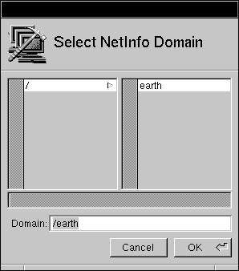
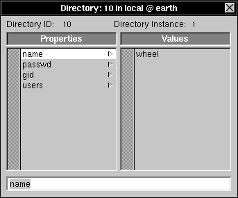

Release 3.3 Copyright ©1994 by NeXT Computer, Inc. All Rights Reserved.
| 3 | NetInfo Networking | |
| Once you've set up your basic network, you'll need to start thinking about maintenance. Your network configuration may never need adjusting, but if you want to modify network features, such as turning automatic host addition on or off, or changing the network time service, you'll need to use applications other than SimpleNetworkStarter (SNS). In addition, a thorough understanding of NetInfo can be invaluable while you administer your network. | ||
| This chapter covers how to add and delete hosts, set up network time service, and add host aliases and netgroups. It also discusses the applications used to administer a NetInfo network, and describes the data structures, files, and processes that make up NetInfo. |
| Enabling Automatic Host Addition |
| If you enabled automatic host addition when you configured your network with SimpleNetworkStarter, you don't need to do it again. If you omitted this feature during setup, you can use either SNS or HostManager to configure Automatic Host Addition. The following example references HostManager. |
| 1. | Log into any networked computer, using any valid account. | |
| 2. | Start up HostManager, located in /NextAdmin. If you're not logged in as root, HostManager will display a panel telling you that you must have superuser status to run this application; enter the root password and click Login. | |
| 3. | Choose Automatic Host Configuration from the Network menu. The Select NetInfo Domain panel appears. |
|  |
| 4. | Select the root domain by clicking / in the left column. (If your NetInfo setup is more complicated, select whatever domain is appropriate--but not the local domain.) You specify the root domain so that new hosts will be recognized throughout the network. Click OK. The automatic host configuration panel appears. | |
| Note: Enable Automatic Host Addition on at most one domain per local network (subnet). |
| 5. | Select the range of assignable addresses. | |
| When a computer is automatically added to the network, the Internet address it is assigned is chosen from the range defined by the values in the From and To fields. The network portion of these values (everything up to the last decimal) should be the same in both fields, and the final number can range from 1 to 253. Be careful that any addresses already assigned to computers aren't included in the range you set here. The bootpd process skips addresses already in use. | ||
| Note: This section describes a class C network. If you have a class A or B network, the numbering will be different. See Appendix C, "Internet Addressing," for details, including a discussion of network numbers and address classes. | ||
| 6. | Enter an address in the Temporary field to be temporarily assigned to new computers while they're being added. Make sure that this value has the same network number as the NetInfo and configuration server but is not in the range of addresses that are assignable to new computers. A number ending in 254 is a good choice. | |
| 7. | Use the Network Password section of this window to determine what type of security check is performed when a new system is added to the network. By default, the domain's root password will have to be entered before a new host can be added to the network. | |
| If you prefer, you can use a network password--a password that's independent of the root password in any particular domain. This password allows network users to add their own computers to the network without having access to the root password, but it protects against the addition of an unauthorized computer. To enable this feature, click the Network Password button. You're presented with the Network Password panel, where you need to enter and confirm the new password. |
| If you don't want any password to be required when a new computer is added to the network, click the None button. |
| 8. | If there's no check mark in the Automatic Host Configuration Enabled check box, click it to enable this function. |
| 9. | Click Set to save the addresses and enable automatic host addition. |
| 10. | If you're prompted for the root password of the root NetInfo domain, enter the password and click Login. The root password of the domain is initially the same as the root password of the computer running the NetInfo server. |
|
| Disabling Automatic Host Addition
If you've enabled automatic host addition and now want to disable it, perform the following steps: |
| 1. | Log into any networked computer. | |
| 2. | Start up HostManager, located in /NextAdmin. If you're not logged in as root, a panel will appear prompting you to enter the root password; enter the password and click Login. | |
| 3. | Choose Automatic Host Configuration from the Network menu. | |
| 4. | In the Select NetInfo Domain panel, select the root NetInfo domain, or an intermediate domain if you have a more complicated network. Click OK. | |
| 5. | Click the Automatic Host Addition Enabled check box so that the check mark disappears. Click OK. | |
| 6. | If you're prompted for the root password of the domain, enter the password and click Login. |
| Adding New Hosts to the Network |
| To add a new host to the network, you need to create a host entry for it in the /machines directory. A host entry includes the computer's Ethernet address, its Internet address, and its host name as property values for the en_address, ip_address, and name property keys in its subdirectory. If you've enabled automatic host addition, the host entry is created for you. If you've chosen not to use automatic host addition, you need to use HostManager (or NetInfoManager) to create the host entry yourself.
Automatically Adding a New Host If you've enabled automatic host addition, use the following procedure to add a new host: |
| 1. | Physically connect the new host to the network. Do this before you start it up; otherwise, it won't be correctly added to the network. | |
| 2. | Turn on the new computer. | |
| 3. | As the computer starts up, a series of messages is displayed in a window on the new system asking for configuration information. After you provide the information, the information is added. |
| a. | The first message indicates that the configuration server couldn't find the new computer's Ethernet address in its database. You're then prompted for the host name. |
 Network doesn't recognize computer.
Network doesn't recognize computer.
 Enter host name:
Enter host name:
| Enter the host name you've chosen for the computer and press Return. |
| b. | Next, you're asked if you want to add the host to the network. |
 Add computer to the network [y/n]?
Add computer to the network [y/n]?
| Type y and press Return. |
| c. | If you're using a password for automatic host addition, you're prompted for it. |
 Enter network password:
Enter network password:
| Enter the network password or the root password of the domain, depending on which scheme you've chosen, and press Return. |
| If you see any messages other than those discussed here, see the "Troubleshooting" section at the end of this chapter. |
| Manually Adding a New Host
If you've chosen not to enable automatic host addition, use the following procedure to add a new host to the network.
Determining the Ethernet Address Use the following procedures to get the Ethernet address from the new host. Be sure to do this on the system you're about to add to the network.
On a PC Computer |
| 1. | Turn on the computer. When you turn on the system, you will see the manufacturer's Power On Self Test (POST) messages. These messages disappear within seconds, and the boot process begins. | |
| 2. | The boot process begins and within a few seconds presents the boot: prompt with a message that you have ten seconds to enter ? to see more information or enter the -v option to boot in verbose mode. Enter the -v option at the boot: prompt. | |
| 3. | The system will continue booting, with messages reflecting the registration process for device drivers. Look for the messages concerning registration of your computer's network card, in the form en0: Ethernet address 00:00:00:00:00:00 and record the numbers exactly as they appear. |
| On a NeXT Computer |
| 1. | Turn on the computer. When you turn on the system, the first thing you see is the message "Testing System." This message disappears within seconds, and the boot process begins. | |
| 2. | Immediately after the "Testing System" message goes away, stop the boot process by holding down the Command bar and Alternate key and pressing the ~ key (without pressing Shift). On keyboards with two Command keys, hold down the right Command key while pressing the ~ key. This displays the ROM monitor window, which contains information about the hardware, including the Ethernet address. | |
| Here's an example of the ROM monitor output (yours will look slightly different): |
 CPU MC68040 33 MHz, memory 70 nS
CPU MC68040 33 MHz, memory 70 nS
 Ethernet address: 0:0:f:0:7:3d
Ethernet address: 0:0:f:0:7:3d
 Memory size 16MB
Memory size 16MB
 NeXT>
NeXT>
| Note: If you were a little slow with your key sequence, you see the Restart/Power-Off panel instead. Press the Power key and try again. |
| 3. | Write down the address. An Ethernet address is a sequence of numbers separated by colons (in the example, the Ethernet address is 0:0:f:0:7:3d). Be sure to copy the number exactly as it appears. |
| Creating the Host Entry
Now that you have the hardware address of the network interface for the new system, add the new host entry to the NetInfo database (for now, leave the new system as is). Be sure to do this on a computer that's already connected to the network--not on the system you're adding to the network: |
| 1. | Start up the HostManager application, located in /NextAdmin. | |
| 2. | If you're not logged in as root, HostManager displays a panel telling you that you must have superuser status to run this application. Enter the password for the root account and click Login. | |
| 3. | Open the New Host window by choosing New from the Host menu. You use this window to create a host entry. |
| 4. | Replace newhost in the Hostname field with the host name you want to give the new computer. Remember, a host name must be unique, should contain no more than 8 lowercase characters, and shouldn't contain anything other than letters, numerals, dashes (-), and underbars (_). (These aren't absolute rules, but following these suggestions makes sure that you'll never have any problem with your host names.) The names localhost, broadcasthost, and mailhost are reserved and shouldn't be used here. | |
| 5. | Replace the default Internet address in the IP address field with a unique address for the new host. HostManager doesn't check whether you've chosen a unique address, so be careful--duplicate Internet address assignments will cause network problems. The best strategy is to increment the number sequentially, starting with the address of the NetInfo and configuration server. Assuming a class C network, valid numbers for a host node are in the range 1 to 254. Remember that the network number must be the same as other machines. | |
| 6. | Replace the value in the Ethernet Address field with that which you found for this computer. Be careful to enter it exactly. Be sure to avoid "leading zero characters," e.g. enter 0:0:f:0:ab:1 rather than 00:00:0f:00:ab:01. | |
| 7. | You can enter the name of the system owner in the System Owner field. This isn't used by the network, but makes it easier for you to identify the computer. | |
| 8. | If you want to indicate the type of computer, use the System Type button to drag to the appropriate choice. Again, this field is for identification purposes only. | |
| 9. | If you want this host to be known by more than one name, you can add an alias. Click in the text field in the Host Name Aliases section, enter the alias name, then click Add. The same restrictions that apply to host names in general also apply to alias names. |
| 10. | If you want this host to be a member of a netgroup, add it in the Netgroups area. A netgroup is similar to a user group in that it's a name used to reference a group of hosts. | |
| You can use a netgroup name in place of a host name in some situations, such as when you're exporting remote directories. To add this host, click the text field under Netgroups, enter the group name, then click Add. |
| 11. | Ignore the Netboot Configuration button because it's used to set up a NetBoot client. See Chapter 13, "NetBooting," for details. | |
| 12. | Save the new host entry by choosing Save from the Host menu. The Save To NetInfo panel appears. |
| 13. | Specify the root domain by clicking / or select an intermediate domain appropriate for your site. The box labeled "This is host's parent domain" enables the automatic binding of this computer's local domain to its parent domain (for more information, see Chapter 10, "Configuring a Large Network"). Unless you are on a mixed network, leave the box checked. For more information, see Chapter 11, "NEXTSTEP Computers in a Mixed Network." Click OK. | |
| 14. | Enter the root password for the domain and click Login, if prompted. | |
| 15. | Boot the new computer. |
| Repeat this procedure for each additional host. Be sure to close the New Host window and then choose the New command for each new host, rather than just changing the information for the previous host. |
| Adding a Modified Host |
| The Ethernet address, stored on the EPROM chip, uniquely identifies each NeXT computer. If you replace the CPU board or EPROM of a NeXT computer, that computer will have a different Ethernet address, and the configuration server will no longer recognize it. In order for this computer to be recognized, you need to modify its host entry.
Automatically Adding a Modified Host If you've enabled automatic host addition, use this procedure to add the modified host to the network: |
| 1. | Physically connect the modified host to the network. Do this before you start up the computer; otherwise, it won't be added correctly. | |
| 2. | Turn on the computer. | |
| 3. | As the computer starts up, a series of messages is displayed in a window on the modified system, asking for configuration information. After you provide the information, the configuration server modifies the host entry in its database. |
| a. | The first message indicates that the configuration server couldn't find the modified computer's new Ethernet address in its database. You're then prompted for the host name. |
 Network doesn't recognize computer.
Network doesn't recognize computer.
 Enter host name:
Enter host name:
| Enter the existing host name for the computer: |
| b. | Because the configuration server has a host entry in its database for the host name you entered, but the Ethernet address doesn't match, it asks if the computer has a new CPU board, new EPROM, or a new network adapter. |
 Name recognized. New CPU board or ROM chip [y/n]?
Name recognized. New CPU board or ROM chip [y/n]?
| Type y and press Return. |
| c. | Next, you're asked if you want to add the modified host to the network. |
 Add computer to the network [y/n]?
Add computer to the network [y/n]?
| Type y and press Return. |
| d. | If you're using a network password for automatic host addition, you're prompted for it. |
 Enter network password:
Enter network password:
| Enter the network password or the root password of the server, depending on the scheme you've chosen, and press Return. |
| If you see any messages other than those described here, see the "Troubleshooting" section later in this chapter. |
| Manually Adding a Modified Host
If you've chosen not to enable automatic host addition, and need to reconnect a modified host to the network, follow these procedures. |
| 1. | Determine the network hardware address (Ethernet or Token Ring) of the modified host following the procedures in "Manually Adding a New Host" earlier in this chapter. | |
| 2. | Log into a computer that's already connected to the network and start up HostManager, located in /NextAdmin. | |
| 3. | If you're not logged in as root, HostManager displays a panel telling you that you must have superuser status to run this application. Enter the password for the root account and click Login. | |
| 4. | Choose Open from the Host menu. The Open in NetInfo Domain panel appears. |
| 5. | Click / in the Domain section of this panel or choose the appropriate intermediate domain. |
| 6. | In the Hostname list in the Open In NetInfo Domain panel, click the host you want to modify (in this example, mars). Click OK. The host window appears. You use this window to edit a host entry. |
| 7. | Replace the value in the Ethernet Address field with the one you wrote down earlier. Be careful to enter it exactly as it was displayed. Leave the other values as they are. | |
| 8. | Save the modified host entry by choosing Save from the Host menu. | |
| 9. | Enter the root password of the domain and click Login, if prompted. |
| 10. | Reboot the modified host. |
| Deleting a Host from the Network |
| To remove a host entry from the network database, follow these procedures: |
| 1. | Log into any networked computer, using any valid account. | |
| 2. | Start up the HostManager application, located in /NextAdmin. | |
| 3. | If you're not logged in as root, HostManager displays a panel telling you that you must have superuser status to run this application. Enter the password for the root account and click Login. | |
| 4. | Choose Open from the Host menu. | |
| 5. | Click / in the Domain panel or the name of the appropriate intermediate domain. |
| 6. | In the Hostname list in the Open In NetInfo Domain panel, click the host you want to delete (in this example, mars is deleted). Click OK. The host window appears. |
| Warning: | Don't delete localhost or broadcasthost from the local domain, and don't delete the host name of any master NetInfo server's computer. |
| 7. | Choose Host from the main menu, then choose Delete. An attention panel like the following appears, asking you to confirm that you really want to delete the host. Click Yes. |
| 8. | Enter the root password for the domain and click Login, if prompted. |
| The host you selected is now removed from the network database. |
| Adding Host Aliases and Netgroups |
| If you want to add an existing host to a netgroup, or you want to create host name aliases for an existing host, use HostManager: |
| 1. | Log into any networked computer, using any valid account. | |
| 2. | Start up HostManager, located in /NextAdmin. | |
| 3. | If you're not logged in as root, HostManager displays a panel telling you that you must have superuser status to run this application. Enter the password for the root account and click Login. | |
| 4. | Choose Open from the Host menu. The Open in NetInfo Domain panel appears. |
| 5. | Click / in the Domain panel or the name of the appropriate intermediate domain. | |
| 6. | In the Hostname list in the Open in NetInfo Domain panel, click the host you want to modify (in this example, mars). Click OK. The host window appears. |
| 7. | To let this host be known by more than one name, add an alias. Click in the text field in the Host Name Aliases section, enter the alias name, then click Add. After you save, this computer can be referenced using its host name or any of its aliases. The same restrictions that apply to host names in general also apply to alias names. | |
| 8. | To make this host a member of a netgroup, add it in the Netgroups area. A netgroup is similar to a user group in that it's a name used to reference a group of hosts. | |
| You can use a netgroup name in place of a host name in some situations, such as exporting a remote directory. To add this host, click in the text field under Netgroups, enter the group name, then click Add. | ||
| 9. | Save the modified host entry by choosing Save from the Host menu. |
| 10. | Enter the root password of the domain and click Login, if prompted. |
| Configuring Network Time Service |
| Each computer maintains an internal clock that keeps track of time. When several computers are connected on a network, it's important to make sure that all of the computers agree on the time, especially if they're sharing files. To do this, you must designate one or more hosts to run time server processes and set the remaining hosts to run only time client processes. If you set this feature with SimpleNetworkStarter, you don't need to do it again. However, if you want to enable network time service after the network has been configured, or you want to have multiple time servers, you need to use HostManager.
Choosing Time Servers Three kinds of hosts are involved in network time service--those that run master time server processes, those that run clone time servers, and those that run only time client processes. Clients set their time to time servers, and have a preference for clone time servers. If a client can't find a clone server on the network, it looks for a master time server. If it finds no master server, it relies on its own clock. A master server looks for other master servers. If it finds any, together they reach consensus about the correct time. If a master time server finds no peers, it uses its own clock. If you have a computer with a definitive time source, for instance one derived from the Internet or a very accurate clock, it should run the sole master time server on your network. If you have a very large network, having one or two master time servers makes it easier to reset the network time, while adding a few clone servers will help reduce the load on the master time server. Clone servers try to set their time to master time servers. If a clone server finds no master server, it looks for other clone servers on the network. If there are other clone servers on the network, all of them negotiate an average of what their internal clocks indicate. If there are no other time servers on a network, either master or clone, a clone server relies on its own clock. Unless you have a very large network, it's probably best to designate only clone servers (no masters). A good strategy to use is to designate all computers running NetInfo servers as also running clone time servers.
Enabling Time Service Before you can designate time servers, you need to enable automatic time service. If you used automatic host addition to add hosts to your network, or you enabled time service when you manually added your hosts, there's no need to do it again. Otherwise, follow these procedures for each computer on the network: |
| 1. | Log in to the computer. | |
| 2. | Start up HostManager, located in /NextAdmin. | |
| 3. | If you're not logged in as root, a panel appears asking you to log in as the superuser. Enter the root password, then click Login. | |
| 4. | Choose Local from the main menu. The Local Configuration window appears |
| 5. | In the Time Standard area, click the button labeled Use Network Time. | |
| 6. | Click Set. | |
| 7. | Reboot your computer for the change to take effect. |
| Time service is now enabled for this computer. Note that the default condition is for network time to be used.
Designating Time Servers To run a time server on a computer, follow these steps: |
| 1. | Log into any networked computer using any valid account. | |
| 2. | Start up the HostManager application, located in /NextAdmin. | |
| 3. | If you're not logged in as root, HostManager will display a panel telling you that you must have superuser status to run this application. Enter the password for the root account and click Login. | |
| 4. | Choose Network Time Configuration from the Network menu. The Select NetInfo Domain panel appears. |
 |
| 5. | Select the root domain by clicking / or choose the appropriate non-local domain. Click OK. A panel like this appears. |
| 6. | Click the Time Service Enabled check box. | |
| 7. | For each host you decide to designate as running a clone time server: |
| a. | Click the name of the host you've selected to run a clone time server (venus, in this example). | |
| b. | Click the Clone button. A "C" appears next to the host's name. |
| 8. | For each host you want to designate as running a master time server: |
| a. | Click the name of the host you've selected to run a master time server (earth, in this example). | |
| b. | Click the Master button. An "M" appears next to the host's name. |
| Note: Because the remaining hosts are already classified as clients, you don't have to specify what they are--the Client button is used only if you want to change a computer running a time server back to one that doesn't. |
| 9. | Click Set. |
| 10. | For the changes to take effect, all the computers newly designated to run time servers need to be rebooted. You also need to reboot any new time client-only computers. |
| The hosts to be used for serving network time are now identified.
Disabling Time Service If you want a computer to use its own clock and never look for time servers, use the following procedures. Be careful, though: a computer that independently maintains its own time suffers from "time skew," in that its time gradually becomes faster or slower than that of other computers. At some point, the slower computer may balk at getting data timestamped from the future. |
| 1. | Log into the computer. | |
| 2. | Start up HostManager, located in /NextAdmin. | |
| 3. | If you're not logged in as root, a panel appears asking you to log in as the superuser. Enter the root password, then click Login. | |
| 4. | Choose Local from the main menu. The Local Configuration window appears. |
| 5. | In the Time Standard area, click the button labeled Ignore Network Time. | |
| 6. | Click Set. | |
| 7. | Reboot your computer for the change to take effect. |
| Time service is now disabled for this computer. |
| Using the Network |
| With your network configured, many features are now available. In addition to all of the functions described elsewhere in this manual, you might find certain UNIX commands helpful as you work with and troubleshoot your network.
Using UNIX Networking Commands Sometimes you might want to make a direct connection to a remote host. Perhaps you need to log into a faraway host, or you need to move a file from one computer to another. The UNIX commands telnet, rlogin, rsh, rcp, and ftp are used to perform these tasks; you execute these commands from the C shell command line in a terminal window. Three of these commands--telnet, rlogin, and rsh--are used to simulate a terminal connected to a remote host. For file transfer, use ftp or rcp; these utilities provide a way to send or receive individual files or entire directory trees. For further details on each of these programs, see the UNIX manual pages.
Remote Application Execution It's possible to put the entire interface for any NEXTSTEPTMapplication on a different computer than the one that's running the application. This can be useful for troubleshooting. It might also be useful for having a computer execute a computationally-intensive process if you're already loading down your own computer with other processes, or to run an application on a computer based on a different architecture. You can use the telnet or rlogin networking commands to run an application on another computer. The -NXHost option lets you specify a computer on which the NEXTSTEP user interface appears. The OpenSesame service utility lets provides a means to execute applications remotely and also provides a shortcut to using the root UID without having to log out then log in as root.
Executing an Application on a Remote Computer In the following steps, your computer is called yourhost and the remote computer otherhost. In this example, otherhost runs the Digital WebsterTMapplication while the window is displayed on yourhost. |
| 1. | On yourhost, start up Preferences. Scroll to the UNIX button, click it, then click the Private Window Server check box. The check mark disappears. Hide Preferences. | |
| Note: Having a computer set up as a public window server is a security risk. See Chapter 14, "Security," for more information. | ||
| 2. | Open a terminal window and log into otherhost using telnet or rlogin, whichever you prefer. | |
| 3. | On otherhost, enter the following command, replacing yourhost with the host name of your computer: |
 /NextApps/Webster.app/Webster -NXHost yourhost
/NextApps/Webster.app/Webster -NXHost yourhost
| The application interface soon appears on your screen.
Note: Once any part of the application interface appears on screen, you may turn the private window server back on. All interaction is with the application interface on yourhost while the application actually runs on and uses the resources of otherhost. |
| 4. | When you're finished, quit the application. |
| Executing an Application on the Local Computer
With a similar technique, you can run an application on your computer and have its interface shown on another. In this example, you run Webster on yourhost with the application interface on otherhost. |
| 1. | On otherhost, start up Preferences. Scroll to the UNIX button, click it, then click the Private Window Server check box.The check mark disappears. Hide Preferences. | |
| Note: Having a computer set up as a public window server is a security risk. See Chapter 14, "Security," for more information. | ||
| 2. | Open a shell window on yourhost. Enter the following command, replacing otherhost with the host name of the remote computer: |
 /NextApps/Webster.app/Webster -NXHost otherhost
/NextApps/Webster.app/Webster -NXHost otherhost
| 3. | Go to otherhost, where you see the Webster menu and window appear. Use the application. | |
| All interaction is with the Webster interface on otherhost while the application actually runs on and uses the resources of yourhost. | ||
| 4. | When you're finished, quit Webster. The prompt returns in the shell window on yourhost. |
| Using OpenSesame
Most applications include the /NextDeveloper/Demos/OpenSesame.app utility as one of the Services commands. Choosing Services, OpenSesame will, by default, generate a submenu showing the Open As Root and the Open On Another Host commands. (You can use OpenSesame's Hosts menu to add specific computers to the list.) Choose Open As Root to execute the application with root privileges. For example, if you run Edit and choose Services, OpenSesame then choose Open As Root, OpenSesame will present a panel asking for the root password then let you execute a second instance of Edit on your computer as though you had logged in as root. This saves you having to log out then log back in to execute programs requiring root user. If you wish to use Open On Another Host, you must be sure that the /etc/.rhosts and the /etc/hosts.equiv files are properly set up (see the man pages for rhosts or hosts.equiv for information). You must also set Public Window Server set in you computer's Preferences (a security weak point). Finally, your use of common files is limited to common NFS mount points. Choose Open On Another Host and OpenSesame presents a panel asking for the name of the remote host then may ask for a password, then lets you run the application on the other host with the display on your computer. See OpenSesame's Info, Help command for more information. |
| Examining the NetInfo Database |
| SimpleNetworkStarter and HostManager are applications with friendly interfaces to a sometimes complicated collection of data and operations. In this section, you'll look at some of the underlying details of the network you built with SimpleNetworkStarter. The understanding you gain about NetInfo networks can help you isolate problems and correct them as they arise; it can also help you customize your network.
NetInfo Tools Each NEXTSTEP system provides a variety of tools that allow you to inspect and manipulate NetInfo. A suite of applications (collectively called the Manager applications) provides a friendly interface to the most common activities you'll be performing while administering one or more NEXTSTEP computers. In addition, several UNIX utilities are available for low-level, direct access to the NetInfo system.
The Manager Applications Each NEXTSTEP computer comes with applications located in /NextAdmin folder that you can use to manage system administration information. What follows is a brief description of each application, to help you determine which one to use. |
| SimpleNetworkStarter sets up a simple NetInfo network. Its use is covered in Chapter 2. | ||
| NFSManager is used to import and export directories, allowing remote access across the network. Chapter 4, "Setting Up the Network File System," explains how to use NFSManager. | ||
| UserManager is used to add, modify, and delete user accounts, as well as create and remove user groups. This application was introduced in Chapter 2, and is covered more thoroughly in Chapter 5, "Managing User Accounts and User Groups." | ||
| PrintManager, located in /NextApps, is used to add a new printer or fax modem to a system, configure a network printer or fax modem, and monitor the progress of print requests. PrintManager is described in the User's Guide. | ||
| HostManager, described earlier in this chapter, is used to set up and maintain information about computers. | ||
| NetInfoManager allows you to access and manipulate NetInfo data. The section "Using NetInfoManager" later in this chapter describes how to use this application. | ||
| NetWareManager is used to authenticate users on a Novell NetWare network and to set up access to printers on a NetWare network. Its use is covered in Chapter 11, "NEXTSTEP Computers in a Mixed Network." |
| Chapter 11 presents information on the PhoneManager and PhoneConnector, present in NEXTSTEP Release 3.2 and earlier versions. The Installation Guide presents information on the Install and Configure applications.
NetInfo UNIX Utilities In addition to the Manager applications, several command-line utilities allow direct manipulation of the NetInfo data. These commands are executed in a terminal window. |
| niload | Lets you load UNIX flat files (such as /etc/printcap and /etc/passwd) into a NetInfo database. This is useful when you're converting existing administrative information to be used by NetInfo. | |
| nidump | Takes data from a NetInfo database and creates output in UNIX file format. This is especially useful when sharing administrative information in a mixed network (Chapter 11 discusses this in more detail). | |
| niutil | Lets you read from and write to a NetInfo database. | |
| nidomain | Lets you create and destroy NetInfo databases and tells you which NetInfo domains are served from which database by the servers running on a particular computer. | |
| nigrep | Searches all NetInfo domains for all instances of a string you specify. | |
| nifind | Reports the existence of a directory you specify, giving its number and optionally its contents, either for a particular domain or for all domains in the hierarchy. | |
| nireport | Yields a report of all values of all properties in all subdirectories as well as those in a directory you specify in a particular domain. |
| More information on these commands can be found in the UNIX manual pages.
Using NetInfoManager The NetInfoManager application allows you to examine and manipulate NetInfo information. While the other Manager applications have specialized uses, NetInfoManager is a general access tool. Throughout the rest of this manual, you'll use it to examine the results of many of the tasks you perform. This section describes how to use NetInfoManager and defines the various components of the NetInfo system.
Precautions Great care should be taken when using NetInfoManager. Because it's a direct access tool, you can very easily make a potentially serious mistake, such as introducing inconsistent data into the NetInfo database. Be sure to double-check your work before saving changes. By default, a confirmation panel like the following appears whenever you modify the database. |
 |
| To disable the confirmation panel for all domains, choose Preferences from the Info menu, then click Never Confirm Modifications in the Preferences panel and click OK.
Note: If you haven't disabled this feature, the confirmation panel will appear whenever you attempt to make any change to a domain. This step is not always included in the procedures in this manual. Unless you feel confident about what you're doing, only use NetInfoManager for changes that you cannot make with any of the other Manager applications. Be sure that you have current backups of the /etc/netinfo directories, just in case you make a mistake. SNS makes backups automatically. You can also make backups of the /etc/netinfo directory with the cp command or preferably with the tar xpf command on the command line in a terminal window.
NetInfo Directories The information within a NetInfo database is organized into NetInfo directories. This organizational structure is very similar to that of the UNIX file system, but you should be careful not to confuse them. In the file system, a directory holds files (containing information) and other subdirectories. In NetInfo, the information associated with a directory is not in files, but in the directory itself. This distinction is clarified in the section "Properties and Values" later in this chapter. Just as with the file system, the NetInfo directory structure begins at the top level with a root directory, represented by a slash (/). Use NetInfoManager to examine the NetInfo directories: |
| 1. | Start up NetInfoManager, located in /NextAdmin. A window displaying the information contained in your local NetInfo database appears (the window displayed on your system may not match exactly): |
 |
| 2. | Click the directory /users. |
| The directory /users has subdirectories of its own, each containing the information about a single user account. Notice that the directory browser used here works much the same as the browser in the File Viewer you've used in the Workspace ManagerTM. |
| Properties and Values
Any NetInfo directory may have subdirectories, and it may also hold data in the form of properties. To see its subdirectories, click once on a directory. To see its properties, double-click on a directory. A property is composed of a key and a value. Take a look at how directories store data in properties by performing the following: |
| 1. | To examine the properties associated with the directory /users, double-click /users in the domain window. The Directory window appears. |
| As shown in this window, each property is made up of two parts: the property key (which can be thought of as the name of the property), listed in the Properties column, and the property values, shown in the Values column. In this example, the /users directory has a single property with the key name that has the value users. A NetInfo directory can have zero or more properties, and a property can have zero or more values. |
| 2. | Choose Directory from the NetInfoManager main menu. The Directory menu appears. |
| The commands in this menu are used in conjunction with the text field in the bottom of the Directory window to manipulate the directory properties. Notice that the property key, name, is displayed in the text field. Entering text in this field, followed by a Return, will modify the property key.
Commands from the Directory menu allow you to insert or append a new property key, while the Delete command from the Edit menu allows you to delete a property. Modifying a property key is necessary when adding new properties, but not advisable otherwise. |
| Warning: | It's not a good idea to change an existing property key, since system software looks for information stored in properties with specific keys. Changing a property key can result in a wide variety of system and network errors. | |
| Click users in the Values column. This selects the property value, allowing you to manipulate it. Notice that users now appears in the text field at the bottom of the window. |
| 4. | Close the Directory window by clicking the close button. | |
| 5. | In the domain window, click the directory /groups. |
| This directory has several subdirectories, each representing a different user group. |
| 6. | Click the subdirectory wheel. It will shift to the middle column where it will appear highlighted. Open the Directory window for the group wheel by double-clicking it. |
|  |
| Notice that this directory has several properties in addition to the name property (passwd, gid, and users). |
| 7. | Click the users property key. This property has two values associated with it, root and me (the names of the users belonging to the group wheel). |
| 8. | Close the directory window. |
| Viewing Directories
By default, the directory browser in NetInfoManager displays the value of the name property for each directory. You might want to see the value of some other property for all the directories. For example, you might want to discover which user account is assigned a specific user ID. Follow these steps to change how the directories are displayed: |
| 1. | Still in NetInfoManager, click the users directory. |
 |
| 2. | Choose View from the Domain menu, then View By. A panel appears containing a list of properties in the /users subdirectory. |
| 3. | Select uid in the list, then click Set View. The directory browser changes to show the first value of the uid property for each directory. |
| 4. | To determine the user name associated with a specific user ID, you can open the appropriate Directory window. For example, double-click 4 in the directory browser. |
| As you can see from the value of the name property, the user uucp is assigned the user ID 4. |
| 5. | Close the directory window. | |
| 6. | Choose View Directories By again. Click name in the resulting list, then click Set View. The directory browser once again displays the value of the name property for each directory. |
| Note: You can also see the contents of all a subdirectory's property keys and values at once by using the Table view in the popup list at the top of the browser.
NetInfo Domains A domain can hold the administrative data for a single computer, a department, or even an entire company. This administrative data includes information about the domain's users and about the resources to which these users have access (such as computers, shared directories, and printers). The information that's available only to an individual computer is called the computer's local domain. A domain is structured as a directory tree, with a root directory and subdirectories, each of which may have subdirectories. Any subdirectory may also have properties, which are composed of a key and a set of zero, one, or more values. Each computer has its own local domain, which contains in its directories and properties the information governing that particular computer. The way in which multiple computers relate as a network requires a shared domain in addition to the local domains for each computer. The directories and properties in the shared domain contain information governing the way the computers work together, i.e., the network information. This additional domain relates to the local domains hierarchically as a parent. Thus NEXTSTEP computers in a NetInfo network each have their own local domains as children and at least one parent domain. The following figure shows three standalone computers, each with its own local domain (represented by a gray rectangle). |
| NetInfo domains are also organized into a hierarchy. At the top of this hierarchy is the root domain, represented by a slash (/). The lowest level of the domain hierarchy is the local domain. In a two-level domain hierarchy, the parent of all local domains is the root domain. In more complicated networks, there may be more levels of the hierarchy--midlevel domains between local domains and the root domain (see Chapter 10, "Configuring a Large Network").
On a NEXTSTEP computer that isn't connected to a network, the local domain is the only domain, so it is the root domain for that computer, and the figure shows in effect three separate "networks" of one computer each. Each local domain must have at least one instance of a database in the /etc/netinfo directory, the /etc/netinfo/local.nidb database, and each instance of each database must have a netinfod process running on that computer. The small gray box in each figure represents a domain (instantiated by a database). The next figure shows the same three computers as in the previous figure after having been connected and configured with SimpleNetworkStarter. |
| The hosts mars and venus still only run their respective local NetInfo domain server processes. By convention, a local domain is given a domain name that matches the name of the host serving it. The local domain on venus is named /venus.
The host earth runs a server process for its own local domain (/earth) and also for the root domain (/) that governs the common network information for all three computers. It is important to note that there are two separate domains on the computer named earth. Each domain has a separate database. The /earth domain contains information that is local to the computer named earth. Information in the root domain (/) stores information common to all the computers in the network. The computer named earth runs a netinfod server process for its local domain and another netinfod server process for the root domain. When a program running on a computer needs to find a piece of information stored in NetInfo, it first looks in its local domain. If it finds what it's looking for, it uses that. If it doesn't, it looks in the parent domain, if there is one. If the information can't be found in the immediate parent domain, the search process is continued until the root domain is reached. Returning to the previous example, when a search for NetInfo information is made on the host mars, the local domain /mars is checked first. If the information isn't found there, the search continues in the root domain (/). A search for NetInfo information never travels down a different branch of the domain hierarchy. For example, a search for information on mars would never access the domain /venus or /earth.
Naming Conventions There are two main ways to name a specific domain: tagged domain notation and domain name notation. Tagged domain notation involves specifying a particular database server that contains the information for the domain. To identify a database server uniquely, you must specify the host computer on which the database resides as well as the tag of the database (the database filename without the .nidb extension). Given an identifier of the form hostname/tagname, you can find the database itself by looking in the /etc/netinfo directory of that host. The database information is contained in the files in the /etc/netinfo/tagname.nidb directory. Domain name notation references an existing domain hierarchy. A particular domain in the hierarchy is specified by the full path to the domain starting with the root. The path is constructed similarly to UNIX filesystem conventions. The name begins with the root name / and is followed by names of child domains delimited by the `/' character, ending with the desired domain. For example, / is the root domain, /admin names the domain admin whose parent is root, and /admin/earth names the domain earth whose parent is admin, which is a child of root.
Multiple Domains NetInfoManager can be set automatically to connect to a specified NetInfo domain at startup. By default, it is connects to the local domain. You can change this using NetInfoManager's preferences panel. To examine or modify information stored in a different domain, do the following: |
| 1. | Choose Open from the Domain menu. The Select NetInfo Domain panel appears: |
| By configuring your network, you have created a two-level domain hierarchy with the root domain at the top and each of the local domains (one for each computer on the network) at the lower level. From this panel, you select the domain you want to open by clicking the name in the browser or typing the name in the text field. Note that you can access any domain in the hierarchy from any host on the network. |
| 2. | Select the root domain by clicking / in the left column. Note that / now appears in the Domain field near the bottom of the panel. In NetInfoManager, use the Domain, Open Parent command. |
| 3. | Click OK. A new domain window for the root domain of the network appears. It's represented by / in the title bar. |
| Notice that the title bar of a domain window includes the tag of the NetInfo database (network), the name of the computer running the server (earth), and the name of the domain (/). |
| 4. | Drag the root domain window away from the local domain window in back of it so that you can compare them; the domains are clearly different. | |
| 5. | Click the directory machines in the second column of each window. In the local domain window, you'll just see broadcasthost and localhost. |
 |
| In the root domain window, in the right column, you see a list of all the computers you added to the network. |
| 6. | Pick a host name and click it. The machines directory is now in the middle column with the computer you chose highlighted. | |
| 7. | Double-click the selected host name. A Directory window appears (mars is the host used in this example). |
| These properties store the host entry information for this computer. They were created when you added this host to your network. |
| 8. | Close the Directory window. | |
| 9. | Click /locations in the root domain window. |
| The locations directory stores information about the locations of various files and servers. The homes directory identifies home directory servers and the localapps directory identifies an application server. These directories are described in Chapter 4, "Setting Up the Network File System." The sendmail directory identifies the sendmail configuration file, and is described in Chapter 6, "Managing Electronic Mail." |
| 10. | Click ntp, then double-click it to open a Directory window. Click host. |
| Use the Parent Domain, Open Parent command to see that the host property of the ntp directory identifies network time servers. |
| 11. | Close the Directory window and quit NetInfoManager. |
| Underlying Data Files and Processes
You've just used NetInfoManager to examine the NetInfo databases associated with your network. Now, you'll look at the files that contain the databases, as well as the processes used to access them. In order to be able to see some of the directories from the File Viewer, you must use Preferences to set the UNIX Expert option in the Expert Preferences panel.
The /etc/netinfo Directory |
| 1. | Log into a computer running a network-wide NetInfo server process, then use the File Viewer to find /etc/netinfo. Note the two subdirectories, local.nidb and network.nidb. |
| On any NEXTSTEP system, the directory /etc/netinfo always has a local.nidb subdirectory. This subdirectory contains the data files for the local domain. When you created your network with SimpleNetworkStarter, you built the network.nidb directory, which holds the files for the root domain. For each domain in a hierarchy, there's a separate directory labeled tag.nidb, where tag is replaced by a string identifying the domain.
Note: Because of the importance of the information stored in /etc/netinfo, make sure you maintain reliable off-line backups of this directory. You can create an on-line backup using NetInfoManager's "Save Backup" command in the Domain menu by using the Domain, Save Backup command while logged in as root to a computer running a server for the domain. |
| 2. | Examine the contents of these directories. In each, you'll find a file named Collection; there may also be one or more additional files named extension_somenumber. |
| These are the data files containing the information for each domain. Information for the local domain for each of the other computers will be stored on each computer in the /etc/netinfo/local.nidb directory. The information in these files should not be viewed or changed with a text editor. Use NetInfoManager or one of the other Manager applications to access and maintain NetInfo information. |
| The /etc/hostconfig File
During system startup, the file /etc/hostconfig is consulted for network configuration information. This file was modified by SimpleNetworkStarter when you set up the network. To examine these modifications, do the following: |
| 1. | Still logged into one of the computers running a network-wide NetInfo server process, open the file /etc/hostconfig. You'll find something like the following, with the host name and Internet address of your computer in place of the variables: |
 HOSTNAME=hostname
HOSTNAME=hostname
 INETADDR=internetaddress
INETADDR=internetaddress
 ROUTER=-ROUTED-
ROUTER=-ROUTED-
 IPNETMASK=-AUTOMATIC-
IPNETMASK=-AUTOMATIC-
 IPBROADCAST=-AUTOMATIC-
IPBROADCAST=-AUTOMATIC-
 NETMASTER=-YES-
NETMASTER=-YES-
 YPDOMAIN=-NO-
YPDOMAIN=-NO-
 TIME=-AUTOMATIC-
TIME=-AUTOMATIC-
| 2. | Log into a computer that is not set up to run a server and open /etc/hostconfig. It should look like this: |
 HOSTNAME=-AUTOMATIC-
HOSTNAME=-AUTOMATIC-
 INETADDR=-AUTOMATIC-
INETADDR=-AUTOMATIC-
 ROUTER=-ROUTED-
ROUTER=-ROUTED-
 IPNETMASK=-AUTOMATIC-
IPNETMASK=-AUTOMATIC-
 IPBROADCAST=-AUTOMATIC-
IPBROADCAST=-AUTOMATIC-
 NETMASTER=-NO-
NETMASTER=-NO-
 YPDOMAIN=-NO-
YPDOMAIN=-NO-
 TIME=-AUTOMATIC-
TIME=-AUTOMATIC-
| The differences between the two files are in the values for HOSTNAME, INETADDR, and NETMASTER.
If a computer has HOSTNAME and INETADDR set to -AUTOMATIC- when it starts up, it requests its host name and Internet address from a configuration server. When a computer running a configuration server starts itself up, the NetInfo database might not yet be available (as the NetInfo server is usually running on the same computer as the configuration server), so its host name and Internet address are supplied from the hostconfig file. If NETMASTER is set to -YES-, the computer will run a configuration server. Note: Because of the importance of hostconfig, make sure you maintain reliable backups of it.
NetInfo Server Processes Each NetInfo database needs a process to serve it; that is, a program running all the time that can get information from the database to provide to other programs that need it. For example, the login process needs to check the user name and password against information in the database. The login program contacts the database server, which returns the necessary information. Each NetInfo database must be accessed through the netinfod server process, which runs constantly. |
| 1. | Open a terminal window on a machine running a network-wide NetInfo server process and enter the following command: |
 ps -ax
ps -ax
| The ps command displays process information. For more information about ps, see the UNIX manual page and Chapter 14, "General Troubleshooting." |
| 2. | Find lines in the output with netinfod in them, like these: |
 63 ? S 2:02 /usr/etc/netinfod local
63 ? S 2:02 /usr/etc/netinfod local
 65 ? S 16:00 /usr/etc/netinfod network
65 ? S 16:00 /usr/etc/netinfod network
| These are the two NetInfo server processes, one for the local domain and the other for the network domain. If your computer runs server processes for more than two domains, you'll see a process for the other domain(s) as well. They must be running for the network to function.
Each server process is started up with a tag that defines the database it serves; this tag matches the prefix of the tag.nidb directory that holds the database information. Thus the server netinfod local serves information from the directory /etc/netinfo/local.nidb. On a computer that's not a server, you'll find only the NetInfo daemon with the tag local. The following figure shows the same three computers as in the earlier figures. Below each computer is a list that includes the processes running on that computer to serve NetInfo domains, and the directories in /etc/netinfo storing the databases. |
| Because mars and venus only run server processes for their respective local domains, they each have a single netinfod process running and a single subdirectory in /etc/netinfo (tagged local). The host earth runs a server process for the root domain, so it has an additional netinfod process and /etc/netinfo subdirectory for the root domain (tagged network). |
| Troubleshooting |
| This section discusses actions to take if you encounter problems performing the procedures in this chapter, or if you're having network difficulties.
Automatic Host Addition Problems When you add a new or modified host using automatic host addition, you might see one of the following messages: |
| Name recognized. New CPU board or ROM chip [y/n]? | ||
| This message indicates that the configuration server already has a host entry for the host name you entered, but that computer isn't currently running on the network. If you see this message while adding a new host, answer no (or n). You'll be prompted for another host name. This may also indicate a spurious value in the trusted_networks property of the root directory for a domain. See the section Automatically Adding a Modified Host earlier in this chapter. | ||
| Host name already in use. | ||
| This message indicates that the host name you entered is the name of a computer currently running on the network. After a brief delay, you'll be prompted for a different host name. | ||
| Incorrect password. | ||
| You'll get this message if you entered the network password incorrectly. You'll be returned to the beginning of the configuration process, where you'll need to enter the host name again. | ||
| Server error: no available IP address. | ||
| You'll get this message if you try to create a new host entry and the configuration server has no more addresses available to assign. The range of assignable addresses will need to be modified on the configuration server, as described earlier in the section "Enabling Automatic Host Addition." Once additional addresses are available, you can then add the new host. (For additional information, see the section Manually Adding a New Host earlier in this chapter.) |
| NetInfo Directory Problems
You may see a directory in NetInfoManager that's listed as dir:# (where # is replaced by a number) rather than a name, as in the following figure. |
| What's displayed in the directory browser is actually the value of the name property for each directory. By default NetInfoManager presents directories by name. You can use the View By selection to direct NetInfoManager to present directories by some other property.
While not required for operation, each directory should have a name. Note that many dirctories, such as /users and /machines and others, do require a name property for proper system operation. If the name property does not exist, NetInfoManager displays the directory number instead. To create a name for a directory, follow these steps: |
| 1. | Double-click the directory name to open the Directory window. |
| As you can see in this example, there isn't a property with the key name. It's accidentally been renamed mynewgroup. |
| 2. | To fix this, enter name in the text field and press Return, giving the property its correct key; name should now show in the Properties list. | |
| 3. | Choose Save from the Directory menu to make the change permanent. Click Change in the confirmation panel if it appears. |
| The value of the name property should now show in the domain window in place of dir: #.
Network Communication Problems If you suspect that there's trouble with the underlying network mechanisms, Ethernet (or token ring) and TCP/IP, the programs ping and netstat can help you check to be sure these lower levels of the communication link are all right. The program ping exchanges low-level messages between two hosts, confirming a connection. Ping other hosts on the network to see if they're receiving your messages and able to exchange information. See the UNIX manual page for ping for details. A simple and direct test is given by ping; more detailed network information is returned by netstat. Once you can ping other hosts and you know that you have a sound network connection, you can get reports of network statistics and status with netstat. The UNIX manual page for netstat explains the details. Once you've checked the basic level of the network with these commands and found them to be operating successfully, you can concentrate on finding problems in your network configuration.
Replacing a Corrupted NetInfo Database If you're having major problems that you believe stem from a corrupted NetInfo database, you can restore the NetInfo and configuration servers to their original, standalone states. In addition, if you're not confident about changes you've made to the local domain, you may want to restore it, too. |
| Warning: | Making a new NetInfo database is a drastic measure. Only do this as a last resort. If you've invested a lot of time creating the NetInfo database, ask an expert for help before replacing it. A better choice is to restore the hostconfig, local.nidb, and network.nidb files from backups made when the network was working properly. | |
| Follow these steps to restore each NetInfo server to its original state: |
| 1. | Restore the NetInfo databases on the computer running the server process for the root domain. Be sure to do this in single-user mode (see Chapter 9, "System Startup and Shutdown," for details). On the computer running the server process for the root domain: |
| a. | Copy /usr/template/client/etc/hostconfig to /etc. This restores the hostconfig file to its default configuration. |
 cp -r /usr/template/client/etc/hostconfig /etc
cp -r /usr/template/client/etc/hostconfig /etc
| b. | Remove the directory in /etc/netinfo to delete all NetInfo domains on that computer. | |
| c. | Copy the files in /usr/template/client/etc/netinfo to /etc/netinfo to restore the netinfo domain to its original state. |
 cp -r /usr/template/client/etc/netinfo /etc/netinfo
cp -r /usr/template/client/etc/netinfo /etc/netinfo
| 2. | Restore the NetInfo databases on any computers running clone NetInfo servers by logging into each computer and following the procedures in step 1. | |
| 3. | Restore the local information on any computers running just local domain servers that you think are damaged. On each such computer follow steps (a) through (c) from step 1. | |
| 4. | Reboot all the computers. | |
| 5. | Set up the NetInfo network from scratch, beginning with the procedures in Chapter 2. |